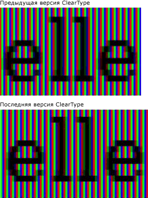

Общие сведения о технологии ClearType
В этой статье дается обзор технологии Технология Microsoft ClearType, доступной в Windows Presentation Foundation (WPF).
Общие сведения о технологии
ClearType — это программная технология, разработанная компанией Майкрософт для улучшения удобочитаемости текста на современных ЖК-мониторах (жидкокристаллических дисплеях), например экранах ноутбуков, карманных ПК и плоскопанельных мониторах. ClearType работает путем обращения к отдельным вертикальным элементам цветных полос в каждом пикселе ЖК-экрана. До представления технологии ClearType минимальным уровнем детализации изображения на компьютере был один пиксель, однако благодаря ClearType на ЖК-экране могут отображаться детали текста вплоть до доли ширины пикселя. Дополнительное разрешение повышает четкость мелких деталей отображаемого текста, значительно облегчая его длительное чтение.
Технология ClearType, доступная в Windows Presentation Foundation (WPF), — это новое поколение ClearType, которое включает несколько преимуществ по сравнению с версией Интерфейс графических устройств (GDI) Microsoft Windows.
Субпиксельная отрисовка
Значительным преимуществом по сравнению с предыдущей версией ClearType является использование субпиксельной отрисовки. В отличие от реализации ClearType в GDI технология ClearType в Windows Presentation Foundation (WPF) позволяет глифам начинаться внутри пикселя, а не только на его начальной границе. Благодаря дополнительному разрешению при отрисовке глифов интервалы и пропорции глифов становятся более точными и согласованными.
В следующих двух примерах показано, как глифы могут начинаться на любой субпиксельной границе при использовании субпиксельной отрисовки. Отрисовка примера справа выполнена с использованием более ранней версии отрисовщика ClearType, в котором не использовалась субпиксельная отрисовка. Отрисовка примера справа выполнена с использованием новой версии отрисовщика ClearType и функции субпиксельной отрисовки. Обратите внимание на то, что каждая буква e и l на рисунке справа отображается немного по-разному, так разные глифы начинаются в разных субпикселях. При просмотре текста в обычном размере на экране это различие незаметно из-за высокой контрастности изображения глифа. Это возможно только благодаря сложной цветовой фильтрации, которая включена в функцию ClearType.

Текст, отображаемый более ранней и более поздней версией ClearType
Сравните вывод предыдущего отрисовщика ClearType с новой версией отрисовщика ClearType в следующих двух примерах. Субпиксельная отрисовка, показанная справа, значительно улучшает плотность знаков на экране, особенно при небольших размерах, когда разница между субпикселем и целым пикселем представляет значительную часть ширины глифа. Обратите внимание, что расстояние между буквами более однородно на втором изображении. Совокупное влияние субпиксельной отрисовки на общий вид текста на экране значительно увеличено и демонстрирует существенное развитие технологии ClearType.
Текст, отображаемый более ранней и более поздней версией ClearType
Сглаживание по оси Y
Другим преимуществом ClearType в Windows Presentation Foundation (WPF) является сглаживание по оси Y. ClearType в GDI без сглаживания по оси Y обеспечивает лучшее разрешение по оси X, но не Y. В верхних и нижних границах мелких изгибов неровные края влияют на их удобочитаемость.
В следующем примере к тексту не применено сглаживание по оси Y. В этом случае неровные края верхней и нижней частей буквы сильно заметны.

Текст с неровными краями у мелких изгибов
ClearType в Windows Presentation Foundation (WPF) обеспечивает сглаживание по оси y уровень сгладить неровные края. Это особенно важно для повышения удобочитаемости восточно-азиатских языков, в которых иероглифы имеют почти равное количество горизонтальных и вертикальных мелких изгибов.
В следующем примере к тексту применено сглаживание по оси Y. В этом случае заметны гладкие изгибы верхней и нижней частей буквы.
Текст со сглаживанием ClearType по оси Y
Аппаратное ускорение
ClearType в Windows Presentation Foundation (WPF) использовать преимущества аппаратного ускорения для повышения производительности и снижения нагрузки и системных требований к памяти ЦП. Используя построители текстуры и память видеокарты, ClearType обеспечивает быструю визуализацию текста, особенно при использовании анимации.
ClearType в Windows Presentation Foundation (WPF) не изменяет общесистемные ClearType параметры. Отключение ClearType в Windows задает Windows Presentation Foundation (WPF) для сглаживания режим "оттенки серого". Кроме того, ClearType в Windows Presentation Foundation (WPF) не изменяет параметры средства настройки ClearType, PowerToy.
Одно из архитектурных решений Windows Presentation Foundation (WPF) предполагает наличие независимого от разрешения макета, который обеспечивает более эффективную поддержку мониторов с высоким разрешением, получающих все большее распространение. Вследствие этого Windows Presentation Foundation (WPF) не поддерживает отрисовку сглаженного текста или точечных рисунков в некоторых восточно-азиатских шрифтах, поскольку они являются зависимыми от разрешения.
Дополнительные сведения
Сведения о технологии ClearType